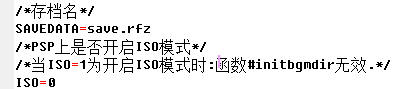
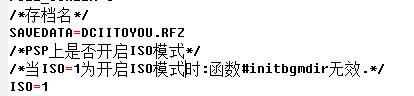
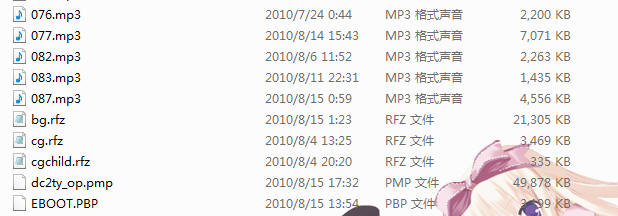
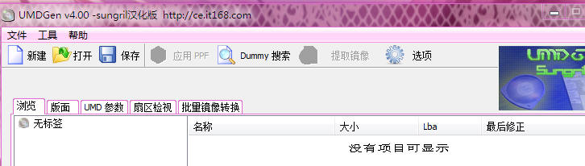
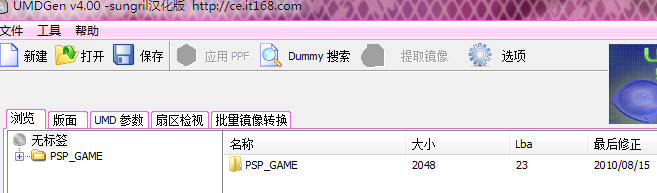
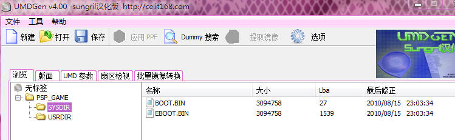
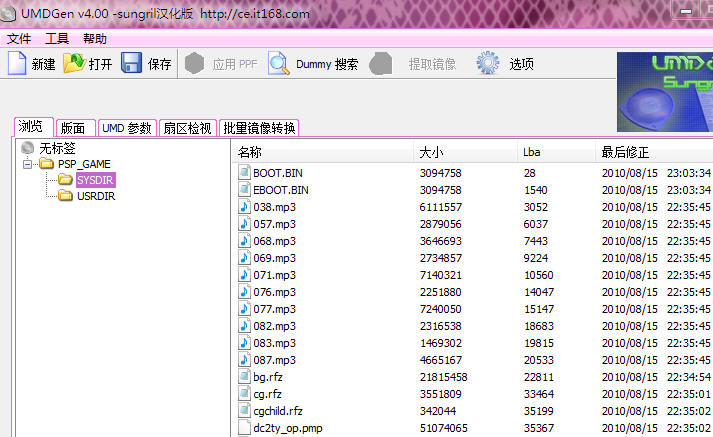
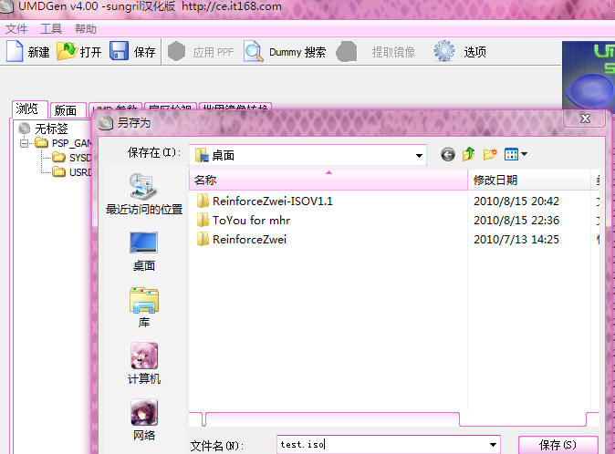

1.在RFZ引擎里打包必须遵守RFZ的打包规则,不是打包是不会成功或者不理想的.
2.首先我们打开 rfz_game_info.ini 文件找到
SAVEDATA 和 ISO 2个键[如果没有就自己手动加进去.]

3.根据需要自己更改 存档名 和 将 ISO模式开启
SAVADATA=你的存档名 [注:不要单纯的扔个SAVE.RFZ就完事了.]
ISO=值[
0:关闭ISO模式[此时存档文件是当前路径下生成的.]
1:开启ISO模式[此时存档文件是:"ms0:\ReinforceZwei\SAVEDATA"路径下生成的.]
]

4.由于开启ISO模式后 #initbgmdir函数是无效的,所以你必须把你的
背景音乐放在于 引擎同一目录下.
如图:

5.注意点:
1.ISO模式下存档都将保存在:"ms0:\ReinforceZwei\SAVEDATA"路径下
2.ISO模式下必须使用 文本索引模式 不然 文本历史回想 无效化.
3.ISO模式下#initbgmdir函数是无效的.
6.我们打开PSP打包工具

7.把同目录下的 PSP_GAME 拖入其中

8.路径转到 SYSDIR

9.将你的游戏资源全部拖入其中

10.打包ISO
